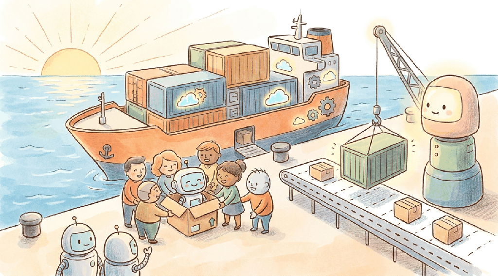

"A demo costs you one API call. Production costs you a thousand calls a minute, a compliance audit, a billing surprise, and a user who expects it to work every single time."
Compass, Production Hardened AI Agent
Chapter 66 took you to a prototype. This chapter takes you the rest of the way: launch constraints, AI unit economics, AI copilots across the product lifecycle, multi-provider strategy and lock-in, and post-launch monitoring. This is the final chapter of the main book; after it you reach the appendices (and the capstone project, which makes you build something using everything you've learned).
Chapter Overview
The hardest part of an AI product is not the demo; it is everything that happens after you decide to ship. This chapter covers the launch-and-scale phase: token economics that determine whether your product is viable, copilot workflows that accelerate every stage, provider strategy that protects against lock-in, post-launch monitoring that catches drift before users do, and a capstone lab that ties the entire Part together.
You will learn to calculate and optimize AI unit economics, deploy copilot workflows across the product lifecycle, architect for provider portability without sacrificing development speed, set up post-launch monitoring and iteration systems, and complete a capstone project that exercises every skill from Part XI. Key deliverables include a Launch Readiness Checklist, a Provider Portability Scorecard, and a Post-Launch Monitoring Dashboard specification.
This chapter builds on the hypothesis work from Chapter 66 and the build methodology from Chapter 66. It references production engineering from Chapter 45, evaluation from Chapter 44, and enterprise strategy from Chapter 31.
This final chapter of the book tackles the hardest transition in AI product development: moving from a working prototype to a sustainable, scalable product. Building on the hypothesis work from Chapter 66 and the build methodology from Chapter 66, it addresses the economic, operational, and strategic realities of production AI, including token cost management, provider portability, and post-launch monitoring. The capstone lab ties together skills from across all eleven parts of the book, giving you a complete end-to-end experience.
The case for multi-provider strategy is grounded in real outages: OpenAI's Dec 11, 2024 outage took ChatGPT and the API offline for several hours, and Anthropic's status page logs comparable events throughout 2024-2025. The concrete fallback-infrastructure anchors are Vercel AI SDK and Cloudflare AI Gateway (Sept 2023), which both offer provider-agnostic routing, retry, and observability layers that absorb provider outages without app-level changes.
Learning Outcomes
- Calculate AI unit economics and make launch decisions that account for token costs, latency, and reliability
- Deploy AI copilot workflows across every stage of the product lifecycle
- Architect for provider portability using the "portable monogamy" strategy
- Set up post-launch monitoring, drift detection, and iteration systems
- Complete a capstone project that exercises hypothesis, build, and ship skills from Chapters 36 through 38
- Chapter 66: From Idea to Product Hypothesis (AI product framing, role assignment)
- Chapter 45: Production Engineering (deployment, monitoring basics)
- Basic Python proficiency and familiarity with REST APIs
Sections
- 65.1 Launch Constraints and AI Unit Economics Token billing physics, deployment platform choices (managed API vs self-hosted vs hybrid), security and compliance readiness, and the Launch Readiness Checklist.
- 65.2 AI Copilots Across the Lifecycle Using LLMs as thinking partners across ideation, requirements, prototyping, prompt steering, and evaluation, culminating in a capstone lab that ties the entire book together.
- 65.3 Lock-in, Portability, and Multi-Provider Strategy Cognitive lock-in vs vendor lock-in, AI continuity planning, translation cost collapse, portable monogamy, multi-provider routing, and a practical portability checklist.
- 65.4 Post-Launch Monitoring and Iteration Continuous production evaluation, drift detection, cost monitoring, A/B testing for AI features, user feedback loops, and data-driven scaling decisions.
- 65.5 Application Architecture & Deployment A comprehensive chapter from the Building Conversational AI textbook.
- 65.6 Frontend & User Interfaces A comprehensive chapter from the Building Conversational AI textbook.
What's Next?
This is the final chapter of the book. From here, revisit the Appendices for reference material, or return to the Table of Contents to explore any chapter in depth.